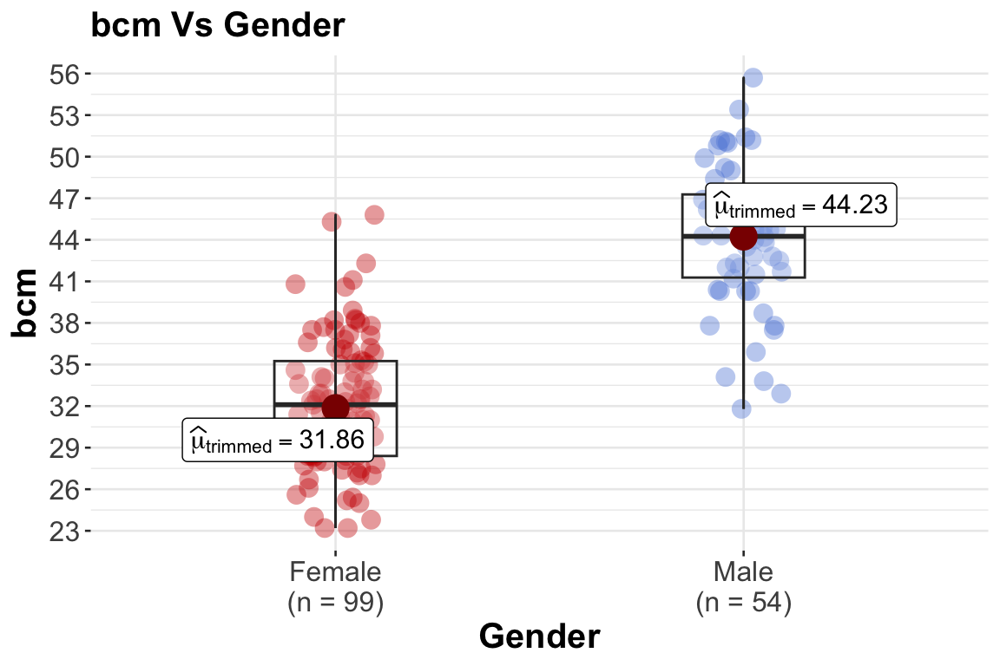
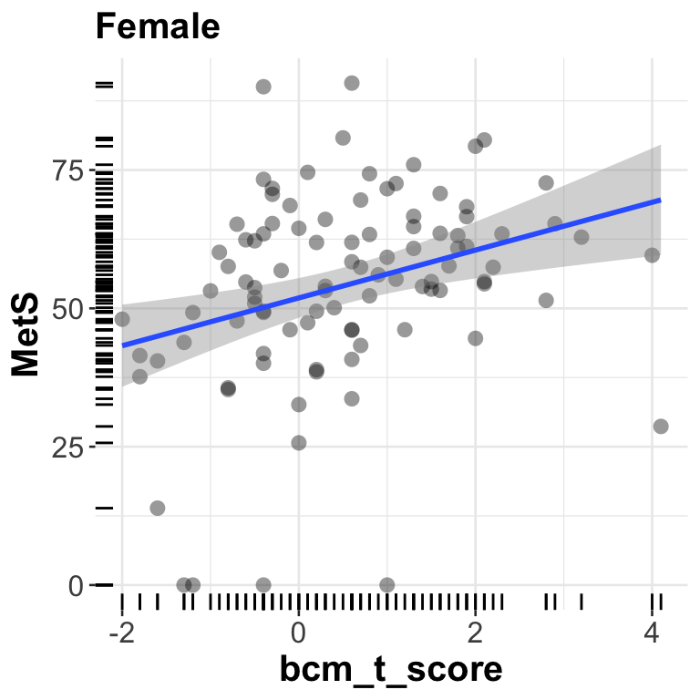
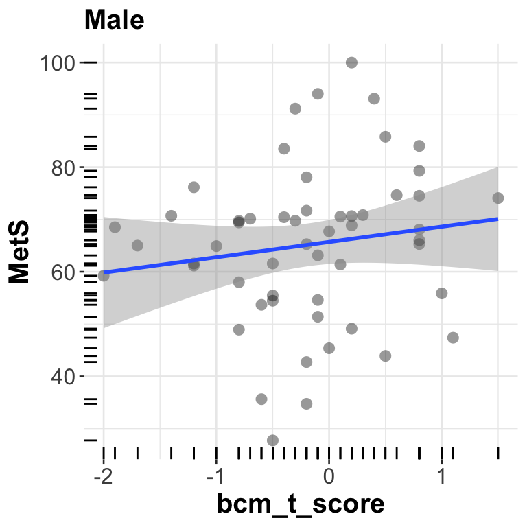
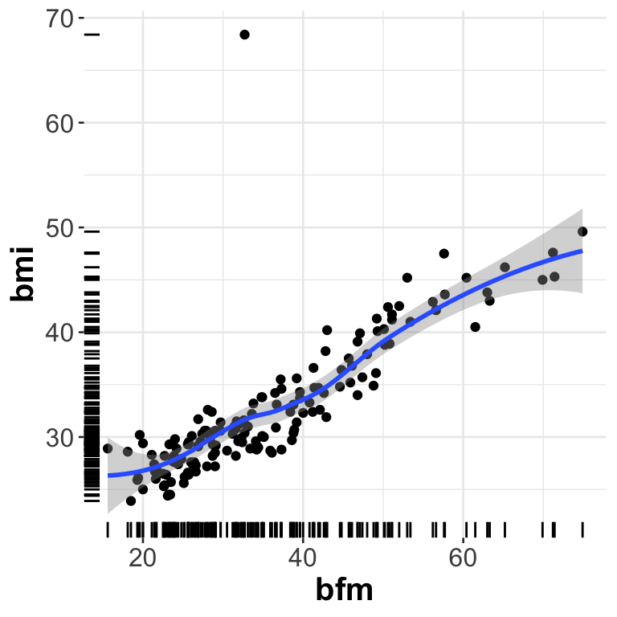
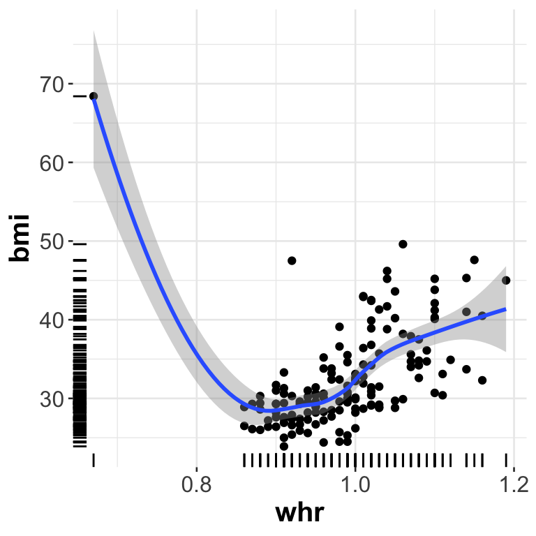
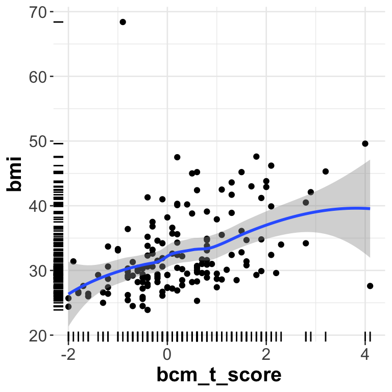

Modeling & Assessing Metabolite Added Value
1 Brief Summary
We constructed a Metabolic Syndrome Index from the available data. The modeling process was iterative, incorporating distinct data blocks based on a predetermined priority order. At each step, we used ordinal regression with penalization and an iterative forward-selection approach. Variables were only added to the model if they significantly improved predictive power, conditional on the variables already present. We assessed this conditional value using likelihood ratio testing as well as relative explained variation, applying in addition the False Discovery Rate (FDR) correction to account for multiple comparisons.
2 Priority Based Modeling
Prioritizing heterogeneous data sources (demographics, clinical, omics, digital health) in building a predictive/association model for metabolic syndrome (MetS). The aim is to balance (i) clinical interpretability, (ii) cost/feasibility, and (iii) explanatory power.
üß≠ Overall logic behind the priority order
The goal is to build models that progress from broad, upstream, easily interpretable determinants of MetS to fine-grained, mechanistic, or exploratory markers.
So the ordering reflects a conceptual causal and interpretability hierarchy, not statistical performance:
From distal → proximal → mechanistic → exploratory
This mirrors how we reason biologically and clinically:
- Who is at risk? (demographics, behavior)
- What modifiable exposures or interventions exist? (diet, medication)
- What physiological manifestations are measurable in routine care? (clinical biochemistry)
- What molecular signatures explain underlying pathways? (targeted metabolites → untargeted omics)
1️⃣ Demographics
Examples: age, sex, ethnicity, socioeconomic status, education, family history
Why first:
- These are fundamental, non-modifiable determinants that shape all downstream biology and behaviors.
- They act as baseline confounders or stratifiers for almost every other dataset (e.g., age and sex affect biochemistry, metabolomics, and disease risk).
- Collected reliably, at low cost, and are always available.
- They provide context for interpreting later findings (e.g., age-related differences in metabolites).
Priority rationale:
Always start here to define baseline risk and to adjust all subsequent models.
2️⃣ Dietary indices / lifestyle factors
Examples: Healthy Eating Index, Mediterranean Diet Score, physical activity questionnaires, smoking, alcohol, sleep questionnaires
Why second:
- Represent modifiable exposures that directly influence metabolic health.
- They often precede disease onset and affect biomarkers downstream (lipids, glucose, metabolites).
- They connect public-health interventions to molecular outcomes.
- Even if self-reported, they capture long-term habits not seen in blood/metabolite snapshots.
Priority rationale:
Key upstream, modifiable factors that influence nearly every physiological pathway related to MetS.
3️⃣ Medications
Examples: antihypertensives, statins, metformin, GLP-1 agonists, etc.
Why third:
- Strongly influence downstream biochemical and metabolomic readouts.
- Represent clinical interventions that modify the phenotype of interest.
- Must be accounted for to distinguish disease biology from drug effects.
- Often act as confounders or effect modifiers in biomarker analyses.
Priority rationale:
Critical to adjust for before interpreting any biological signal — they change metabolic readouts directly.
4️⃣ Device data
Examples: objectively measured activity, step count, energy expenditure, sleep metrics, heart rate variability
Why fourth:
- Provide objective, continuous measures of lifestyle and physiology, complementing self-reported behaviors.
- Reflect real-time metabolic demand and stress, bridging behavior and physiology.
- More proximal than lifestyle but still modifiable and behavioral in nature.
- Increasingly reliable with modern wearables, but still variable across devices and populations.
Priority rationale:
Objective bridge between behavior and physiology; still upstream of biochemical consequences.
5️⃣ Clinical blood biochemistry
Examples: glucose, insulin, HbA1c, triglycerides, HDL, LDL, CRP, liver enzymes
Why fifth:
- Reflect established diagnostic and mechanistic markers of metabolic syndrome components (dyslipidemia, insulin resistance, inflammation).
- Routinely measured, standardized, and directly interpretable.
- Represent proximal physiological consequences of earlier exposures.
- Provide the foundation for defining MetS itself (waist circumference, TG, HDL, glucose, blood pressure).
Priority rationale:
Directly linked to the clinical phenotype; serve as both outcomes and mediators of upstream factors.
6️⃣ Targeted metabolites
Examples: amino acids, sugars, acylcarnitines, bile acids, short-chain fatty acids
Why sixth:
- Capture specific biochemical pathways involved in energy metabolism, insulin signaling, fatty acid oxidation.
- Provide mechanistic insight beyond routine biochemistry.
- Often measurable with targeted LC-MS/MS → quantitative, interpretable, reproducible.
- Reflect early molecular perturbations before clinical changes become apparent.
- Require domain expertise for interpretation; not as standardized across labs as clinical chemistry.
Priority rationale:
Mechanistic layer connecting clinical phenotypes to molecular dysregulation; interpretable but downstream of physiology.
7️⃣ Urine data
Examples: creatinine, albumin, electrolytes, urinary metabolites
Why seventh:
- Reflects systemic metabolic waste and renal function — downstream consequence of blood biochemistry.
- Useful for normalization (e.g., creatinine) or secondary pathways (oxidative stress, kidney involvement).
- More variable due to hydration, timing, diet; less directly interpretable mechanistically than plasma markers.
Priority rationale:
Secondary biofluid — complementary but less directly connected to primary metabolic processes measured in blood.
8️⃣ Untargeted metabolomics / other omics
Examples: untargeted LC-MS, NMR, transcriptomics, proteomics, microbiome, methylomics
Why last:
- High-dimensional, exploratory, and hypothesis-generating.
- Contain potentially novel biomarkers, but also high noise and platform bias.
- Harder to interpret mechanistically without context from previous levels.
- Useful after upstream and targeted layers are understood or adjusted for.
- Often correlate with clinical and targeted data, so entering them last avoids overshadowing interpretable effects.
Priority rationale:
Deep, hypothesis-generating molecular layer — biologically valuable but least interpretable and most context-dependent.
üß© Conceptual summary ‚Äî causal and interpretive hierarchy
| Level | Block | Role in the MetS pathway | Typical use in modeling |
|---|---|---|---|
| 1 | Demographics | Baseline determinants, confounders | Always adjust first |
| 2 | Diet/lifestyle | Modifiable exposures | Causal/behavioral drivers |
| 3 | Medications | Clinical interventions | Confounders/effect modifiers |
| 4 | Device data | Objective behavior, physiology | Bridge between behavior & biology |
| 5 | Clinical labs | Physiological biomarkers | Core diagnostic information |
| 6 | Targeted metabolites | Mechanistic biomarkers | Link pathways to phenotype |
| 7 | Urine | Secondary metabolic output | Complementary / kidney status |
| 8 | Untargeted omics | Exploratory molecular layer | Discover novel mechanisms |
✅ Summary rationale
We start with who the person is (demographics), then what they do (diet & lifestyle), what’s done to them (medications), what their body does in real life (device data), how their physiology currently looks (clinical biochemistry), what’s happening mechanistically (targeted metabolites), what’s being excreted (urine), and finally what’s observable at the most granular molecular level (untargeted omics).
⚖️ Practical Note
- This order emphasizes parsimony and interpretability first, then mechanistic depth.
- Statistically, the analysis can be implemented as hierarchical modeling or block-wise regression (adding predictors in blocks and testing incremental R², likelihood ratio tests, or predictive accuracy).
- If the aim is prediction only (not interpretation), sometimes statistical learning
SLalgorithms can integrate all blocks simultaneously i.e.partial least squares and variants,least absolute shrinkage and selection operator (lasso)— at the expense of losing the interpretative clarity of thepriorityapproach. However, even if prediction is the sole goal, the question is how much more the predictive performance is improved by including all available data into a model. - Most
SLalgorithms that can be applied to small size data or high-dimensional data do not account for potential non-linear associations with a response variable, as well as not accounting for interactions among predictor variables. The priority approach here can handle those issues but in a less automatic manner.
3 Assessing Predictor Added Value - Timepoint 1
We use ordinal regression for modeling any measurement associations with the MetS index. By default, ordinal regression uses the median value of the MetS index in order to separate the samples into low and high risk groups. This median value is ~58.67 on the MetS index scale, and it represents the threshold above which the risk for metabolic syndrome is elevated.
Since ordinal regression is used, an appropriate predictor testing procedure is Likelihood Ratio Testing i.e. LRT.LRT is applied in order to test the added value of a predictor into the model. This process is accompanied by multiple comparison correction via false discovery rates FDR at an acceptance threshold level of 15%. As this is an experimental study, the rather liberal 15% threshold is also changed later to 5% so that a second, more “strict” model is developed.
Depending on how the various data blocks are joined, the sample size is about 150 observations. This means that the model’s effective degrees of freedom effDF should be in the range of 7 to 15 effDF before overfitting occurs. Due to this constraint on the model’s complexity that is imposed by the data sample size, the priority approach uses LRT as long as the model’s effDF does not exceed the 7 to 15 range, and once the model becomes more complex due to the addition of new predictors, the approach uses approximate Wald statistics (i.e. partial R-Squared) for testing the added value of a new predictor into the model. The approximation is due to using the bootstrap as a resampling method in order to obtain a confidence interval for the significance of the Wald statistic. In addition, the relative explained variation rexVar is also used as a second metric for assessing a new predictor’s added value. After using the bootstrap and a 95% confidence interval for rexVar, when the upper 2.5 percentile of the confidence interval is greater than 20%, then the new predictor is kept into the model. The 20% threshold is arbitrary, however the aim is to use a threshold that is positive but not too close to zero.
In the univariate analysis of the Data Processing & EDA page, it was observed that all levels contain potential predictors for modeling the MetS index. The first data block in priority is the demographics one, and from this type of data only Gender shows significance in differentiating the MetS index i.e. p-value 0.003. As such, LRT begins from level 2: Diatery Indices with Gender already included in the model.
From a data quality perspective, it is interesting to note that initially there were two erroneous values in the data that influenced the construction of the metabolic syndrome MetS index or score. There was one observation with a BMI of 68.4 and another with a Diastolic Blood Pressure of 9 mmHg i.e. both errors. Once these values were corrected, the Antihypertensives variable form the medication data and the HEI_Total_Score variable from the dietary data showed a differentiation ability of the MetS, while before this correction they did not show any such differentiation.
However, since many data blocks contain not only correlated measurements but also measurements that are calculated by other measurements, a redundancy analysis is first performed for each such block before LRT is applied. By redundancy analysis we mean using flexible parametric additive models to determine how well each variable can be predicted from the remaining variables. Variables are dropped in a stepwise fashion, removing the most predictable variable at each step, and then the remaining variables are used to as predictors.
Data collected at the first timepoint are only considered for this analysis.
Dietary Indices / Lifestyle Factors
Redundancy Analysis
| row | list of remaining predictors |
|---|---|
| 1 | HEI_Total_Score |
| 2 | Total_DII |
| 3 | MEDAS_Score |
| 4 | Smoking_Status |
| 5 | Sleep |
| 6 | Sedentary |
| 7 | Light |
| 8 | Moderate |
| 9 | Vigorous |
| 10 | Daily_EI |
| 11 | HEI_Total_Score_AdjEI |
where Daily_EI id the daily energy intake in kcal and HEI_Total_Score_AdjEI is the HEI_Total_Score adjusted for the Daily_EI.
LRT
Model: MetS ~ Gender + rcs(xDietaryLifestyle,3) + Gender:rcs(xDietaryLifestyle,3) where xDietaryLifestyle is a predictor from the above list, rcs(xDietaryLifestyle,3) means that when xDietaryLifestyle is continuous, it is transformed using restricted cubic splines with 3 degrees of freedom in order to account for potential non-linear associations, and : means that the variables are also interacting.
Results: None of the potential predictors show added value as the FDR adjusted p-values are higher than the chosen threshold of 15%. All three predictors show similar performance, but MEDAS_Score shows an interaction with Gender that would pass the FDR test. The HEI_Total_Score has a distribution that is largely bimodal, and hence it is not considered a representative measure. As a result, we keep only the MEDAS_Score in the model.
| row | varName | chisq | df | anova_pval | interactions_pval | FDR_pval | varTransform |
|---|---|---|---|---|---|---|---|
| 1 | MEDAS_Score | 23.0018 | 5 | 0.0451 | 0.009632 | 0.1804 | rcs |

MEDAS Score and Gender for differentiating the MetS index. The red horizontal line corresponds to the median MetS index value of 58.67 which separates the index into higher (>58.67) and lower (<58.67) risk regions
1. Relationship is Nonlinear
- There isn’t a simple “higher score = better metabolic health” pattern.
- Instead, both curves show a bend (lowest/highest MetS risk) around MEDAS scores of 7, suggesting a sweet spot of dietary adherence or worsening depending on
Gender.
2. Gender Differences
Females (red line):
- Show a stronger protective effect around MEDAS score 7, with a significant drop in metabolic syndrome index.
- At both very low (1–3) and very high MEDAS scores (>9), the MetS index appears higher again—suggesting either insufficient diet quality or possibly extreme dietary restriction does not confer additional benefit.
Males (blue line):
- The curve is flatter overall—meaning the Mediterranean diet adherence may have less pronounced impact on metabolic risk compared to females in this dataset.
- There’s still a mild upward tip around MEDAS 7, but not as sharp as in females.
3. Possible Interpretation of the “U-shaped” Pattern
Moderate adherence to Mediterranean diet appears most beneficial.
Very low adherence = poor diet → higher MetS risk
Very high adherence might reflect individuals already at high risk making compensatory dietary changes, or reduced metabolic benefit after a certain point (diminishing returns).
The Mediterranean diet appears most metabolically protective at moderate adherence levels (MEDAS 6–7).
Females show a stronger improvement in metabolic health with optimal MEDAS scores compared to males.
Both very low and very high adherence are associated with higher metabolic risk, indicating a nonlinear, possibly U-shaped relationship.
Medications
Redundancy Analysis
All three variables remain.
| row | list of remaining predictors |
|---|---|
| 1 | Antihypertensives |
| 2 | Hyperlipidemias |
| 3 | Antidepressants |
LRT
Model: MetS ~ Gender + rcs(MEDAS_Score,3) + Gender:rcs(MEDAS_Score,3) + xMedication where xMedication is a predictor from the above list, rcs(X,3) means that for each X as above and continuous, X is transformed using restricted cubic splines with 3 degrees of freedom in order to account for potential non-linear associations, and : means that the variables are also interacting.
Results:
| row | varName | chisq | df | anova_pval | varTransform | FDR_pval |
|---|---|---|---|---|---|---|
| 1 | Antihypertensives | 31.8885 | 6 | 0.0152 | AsIs | 0.0456 |
| 2 | Antidepressants | 29.7248 | 6 | 0.0533 | AsIs | 0.0799 |

Antihypertensives in differentiating the MetS index. The red horizontal line corresponds to the median MetS index value of 58.67 which separates the index into higher (>58.67) and lower (<58.67) risk regions.

Antidepressants in differentiating the MetS index. The red horizontal line corresponds to the median MetS index value of 58.67 which separates the index into higher (>58.67) and lower (<58.67) risk regions.
Device Data
By device data we mean the human body measurements as seen in the Data Processing & EDA page. Also a shorter list of those measurements was finally selected for potential inclusion into the model (the list was based on better measurement interpretation reasons).
Redundancy Analysis
| row | list of remaining predictors |
|---|---|
| 1 | Site_Collection |
| 2 | ae |
| 3 | pe |
| 4 | ans_balance |
| 5 | fatigue_index |
| 6 | risk_group_cardiovascular |
| 7 | age |
| 8 | smm |
| 9 | whr |
| 10 | tbw_ffm_ratio |
| 11 | bcm_t_score |
| 12 | khz_whole_body_phase_angle_z_score |
LRT
Model: MetS ~ Gender + rcs(MEDAS_Score,3) + Gender:rcs(MEDAS_Score,3) + Antihypertensives + Antidepressants + rcs(xDevice,3) + Gender:rcs(xDevice,3) where xDevice is a predictor from the above list, rcs(X,3) means that for each X as above and continuous, X is transformed using restricted cubic splines with 3 degrees of freedom in order to account for potential non-linear associations, and : means that the variables are also interacting.
Results:
| row | varName | chisq | df | varTransform | anova_pval | anova_pval_interactions | FDR_pval |
|---|---|---|---|---|---|---|---|
| 1 | smm | 63.6400 | 11 | rcs | 0.0000 | 0.0100 | 0.0000 |
| 2 | bcm_t_score | 63.6681 | 11 | rcs | 0.0000 | 0.0830 | 0.0000 |
| 3 | whr | 54.5978 | 11 | rcs | 0.0012 | 0.8559 | 0.0048 |
| 4 | fatigue_index | 46.4206 | 11 | rcs | 0.0243 | 0.2061 | 0.0729 |
| 5 | Site_Collection | 50.9868 | 15 | AsIs | 0.0529 | 0.0575 | 0.1270 |
From the above table we can also see that smm, bcm_t_score and Site_Collection seem to interact with Gender in differentiating the MetS index. Examples are shown below.

Gender and Site Collection for differentiating the MetS index.

Gender and Skeletal Muscle Mass for differentiating the MetS index. See Figure 34 for comparison to the adjusted case without Gender differentiation.

Gender and Body Cell Mass (t-score) for differentiating the MetS index.
Biochemical Data
Redundancy Analysis
| row | list of remaining predictors |
|---|---|
| 1 | CHOL |
| 2 | LDL |
| 3 | HbA1c_Perc |
| 4 | UREA |
| 5 | CREA |
| 6 | OH_Vit_D3 |
| 7 | ALB |
| 8 | TBIL |
| 9 | Na |
| 10 | K |
| 11 | CRP |
| 12 | RBC |
| 13 | MVC |
| 14 | MCHC |
| 15 | RDW_CV_Perc |
| 16 | MONO |
| 17 | EOS |
| 18 | SGOT |
| 19 | SGPT |
| 20 | ALP |
| 21 | AISI |
| 22 | EBR |
| 23 | LMR |
| 24 | PLR |
rexVar
The following predictors are not considered as they use measurements that define the MetS: TRIG, HDL, GLU, TG_HDL_C_Index, CHOL_HDL_Ratio, TyG_Index and Atherogenic_Index.
Model: MetS ~ Gender + rcs(MEDAS_Score,3) + Gender:rcs(MEDAS_Score,3) + Antihypertensives + Antidepressants + rcs(bcm_t_score,3) + rcs(whr,3) + rcs(smm,3) + rcs(fatigue_index,3) + Site_Collection + Gender:rcs(bcm_t_score,3) + Gender:rcs(smm,3) + Gender:Site_Collection + rcs(xBiochem,3) + xBiochem_Detected + rcs(xBiochem,3):xBiochem_Detected + gender:rcs(xBiochem,3) + rcs(xBiochem,3):Antihypertensives + rcs(xBiochem,3):Antidepressants + rcs(xBiochem,3):rcs(MEDAS_Score,3) + rcs(xBiochem,3):rcs(bcm_t_score,3) + rcs(xBiochem,3):rcs(whr,3) + rcs(xBiochem,3):rcs(smm,3) + rcs(xBiochem,3):rcs(fatigue_index,3) + rcs(xBiochem,3):Site_Collection where xBiochem is a predictor from the above list, xBiochem_Detected is the corresponding LOD related indicator, rcs(X,3) means that for each X as above and continuous, X is transformed using restricted cubic splines with 3 degrees of freedom in order to account for potential non-linear associations, and : means that the variables are also interacting.
Note that the indicator columns of type xBiochem_Detected do not play much of role in the biochemical data since they contain non-detection cases at an average rate of 5%.
Results:
| row | varName | df | pval_partialR2 | varTransform | rowname | REV | Lower | Upper | FDR_pval_partialR2 |
|---|---|---|---|---|---|---|---|---|---|
| 1 | HbA1c_Perc | 17.2171 | 0.0000 | rcs | xBiochem | 0.2066 | 0.0710 | 0.3409 | 0.0000 |
| 2 | TBIL | 18.4097 | 0.0000 | rcs | xBiochem | 0.0978 | 0.0301 | 0.2663 | 0.0000 |
| 3 | SGPT | 17.1463 | 0.0037 | rcs | xBiochem | 0.0992 | 0.0268 | 0.2430 | 0.0045 |

Percentage of Total Hemoglobin in differentiating the MetS index. The red horizontal line corresponds to the median MetS index value of 58.67 which separates the index into higher (>58.67) and lower (<58.67) risk regions. See Figure 31 for comparison to the adjusted case.
U-Shaped Relationship
- At lower hemoglobin levels, the MetS index is higher, indicating poorer metabolic health.
- As hemoglobin rises to a moderate range (~5.0–5.3 mg/dL), the MetS index appears to reach a low point, reflecting better metabolic health.
- Beyond this point, as hemoglobin increases further, the MetS index rises again, suggesting worsening metabolic health.
➡ This indicates that both low and high hemoglobin levels may be associated with increased cardiometabolic risk, while a mid-range value represents a healthier metabolic profile.
üߨ Physiological Interpretation
Low hemoglobin may reflect anemia, inflammation, nutrient deficiencies, or chronic illness—all linked to metabolic dysfunction.
High hemoglobin can reflect:
- Increased blood viscosity (thicker blood),
- Hypoxia or sleep apnea (common in obesity),
- Insulin resistance and oxidative stress,
- Elevated erythropoietin signaling due to metabolic stress.
The plot suggests a U-shaped relationship, where metabolic syndrome risk is lowest at mid-range hemoglobin levels and increases at both lower and higher extremes. This may point to hemoglobin as a marker of metabolic balance, inflammation, and oxidative stress.

Total Bilirubin in differentiating the MetS index. The red horizontal line corresponds to the median MetS index value of 58.67 which separates the index into higher (>58.67) and lower (<58.67) risk regions.
Slight Inverse Trend
- At low bilirubin levels, the MetS index appears slightly higher.
- As bilirubin increases, the MetS index trends slightly lower, particularly beyond ~0.8 mg/dL.
However, the effect is small and relatively flat overall, as shown by the non-linear curve (blue) being close to flat.
üß™ Physiological Interpretation
Bilirubin is both a waste product and an endogenous antioxidant.
Higher bilirubin levels (within normal range) are associated with:
- Lower oxidative stress
- Reduced inflammation
- Lower risk of cardiovascular disease, diabetes, and metabolic syndrome (supported by multiple epidemiological studies)
Low bilirubin may reflect reduced antioxidant capacity and increased oxidative stress, contributing to metabolic syndrome.
The slight downward trend in this plot supports the idea that bilirubin may be protective against metabolic dysfunction.
- There is a modest inverse association between bilirubin and metabolic syndrome risk.
- Higher bilirubin levels (within physiological range) are associated with slightly better metabolic health.
- The relationship is weak compared to other biochemical measurements examined here, indicating bilirubin is likely a secondary or supporting biomarker, not a primary driver.
üîç Bilirubin‚Äôs Effect Seems To Increase When Included in the Model
Even though the raw (unadjusted) relationship between bilirubin and the Metabolic Syndrome Index appears weak and slightly negative, bilirubin is likely correlated with other variables that mask its true protective effect in the unadjusted plot.
Once it is included in a multivariable model that adjusts for those confounding factors, its true independent contribution becomes clearer and stronger.
✅ Possible Explanations:
| Mechanism | What it Means |
|---|---|
| Confounding suppression | Other markers (like inflammation, triglycerides, glucose) may be masking bilirubin’s protective effect in the raw scatterplot. Adjusting for them reveals bilirubin’s true signal. |
| Negative correlation with harmful markers | Bilirubin may be inversely correlated with oxidative stress, insulin resistance, or liver fat — so once those factors are controlled, bilirubin’s protective role is more visible. |
| Nonlinear effects accounted for in the model | The model may capture subtle nonlinear relationships (e.g., U-shaped or threshold effects) that aren’t obvious from a simple scatter. |
| Multimarker synergy | Bilirubin may act as part of a protective metabolic signature that only shows significance in combination with other variables. |
Bilirubin is a strong endogenous antioxidant. Numerous studies show that higher bilirubin (within physiological range) is protective against diabetes, cardiovascular disease, and metabolic syndrome. Its effect is often underestimated in unadjusted observations but becomes apparent when controlling for inflammation, obesity markers, or liver function.
Although total bilirubin appears only weakly associated with metabolic syndrome when viewed alone, the multivariable model reveals that it has a meaningful independent protective effect when controlling for other metabolic factors.

Serum Glutamic-Pyruvic Transaminase in differentiating the MetS index. The red horizontal line corresponds to the median MetS index value of 58.67 which separates the index into higher (>58.67) and lower (<58.67) risk regions.
Clear Positive Association
- As ALT levels increase (even modestly), the MetS index rises.
- The log transform compresses the scale, meaning that each step along the x-axis represents a multiplicative increase in ALT (e.g., doubling or tripling), not a linear unit.
- Despite the compression, the blue trend line still shows a steady upward slope, suggesting that even incremental log-transformed increases in ALT are associated with increased metabolic syndrome risk.
ALT is a biomarker of liver health. Elevated ALT is linked to:
- Non-alcoholic fatty liver disease (NAFLD)
- Insulin resistance
- Visceral fat accumulation
- Chronic inflammation
These are core drivers of metabolic syndrome.
➡ Thus, rising ALT—even in the subclinical range—reflects worsening metabolic dysfunction.
- Higher ALT levels (log-transformed) are strongly associated with increasing metabolic syndrome severity.
- The relationship persists even after accounting for nonlinear scaling—suggesting ALT is a robust indicator of metabolic stress.
- This supports the role of liver dysfunction as a central mechanism in the development of metabolic syndrome.
Amino Acids & Sugars Data
Redundancy Analysis
| row | list of remaining predictors |
|---|---|
| 1 | Anhydroglucitol |
| 2 | Glucose |
| 3 | Mannose |
| 4 | Fructose |
| 5 | Valine |
| 6 | Isoleucine |
| 7 | Glutamine |
| 8 | Phenylalanine |
| 9 | Tyrosine |
| 10 | Tryptophan |
| 11 | Glutamine_To_Glutamic_Acid_Ratio |
rexVar
The Upper rexVar threshold is changed here to 10% from 20% that was used with the biochemical data, in order to give a larger opportunity to metabolites to enter into the model.
Model: MetS ~ gender + rcs(MEDAS_Score,3) + Antihypertensives + Antidepressants + gender:rcs(MEDAS_Score,3) + rcs(bcm_t_score,3) + rcs(whr,3) + rcs(smm,3) + rcs(fatigue_index,3) + Site_Collection + gender:rcs(bcm_t_score,3) + gender:rcs(smm,3) + gender:Site_Collection + rcs(HbA1c_Perc,3) + rcs(SGPT,3) + rcs(TBIL,3) + rcs(xAAS,3) + rcs(xAAS,3):Site_Collection + rcs(xAAS,3):gender + rcs(xAAS,3):Antihypertensives + rcs(xAAS,3):Antidepressants + rcs(xAAS,3):rcs(MEDAS_Score,3) + rcs(xAAS,3):rcs(smm,3) + rcs(xAAS,3):rcs(bcm_t_score,3) + rcs(xAAS,3):rcs(whr,3) + rcs(xAAS,3):rcs(fatigue_index,3) + rcs(xAAS,3):rcs(HbA1c_Perc,3) + rcs(xAAS,3):rcs(SGPT,3) + rcs(xAAS,3):rcs(TBIL,3) where xAAS is a predictor from the above list and rcs means that potential non-linear associations are taken into account, and : denotes interaction.
Results:
| row | varName | df | pval_partialR2 | varTransform | rowname | REV | Lower | Upper | FDR_pval_partialR2 |
|---|---|---|---|---|---|---|---|---|---|
| 1 | Anhydroglucitol | 28.2136 | 0.0038 | rcs | xAAS | 0.0454 | 0.0275 | 0.1146 | 0.0038 |
| 2 | Glucose | 30.1713 | 0.0000 | rcs | xAAS | 0.0659 | 0.0306 | 0.1266 | 0.0000 |
| 3 | Glutamine_To_Glutamic_Acid_Ratio | 24.5132 | NA | rcs | xAAS | 0.0423 | 0.0091 | 0.1079 | NA |
Below is some information on Anhydroglucitol:
1,5-Anhydroglucitol (1,5-AG) is a naturally occurring carbohydrate (a polyol, or sugar alcohol) that circulates in the blood. It is derived mainly from dietary sources and is normally maintained at a stable level in the bloodstream.
Metabolic Role
- 1,5-AG closely resembles glucose in structure.
- Under normal physiological conditions, the kidneys reabsorb it almost completely.
- When blood glucose levels become elevated (especially above the renal threshold ~180 mg/dL), glucose spills into the urine and competes with 1,5-AG for reabsorption.
- This leads to decreased levels of 1,5-AG in the blood.
Clinical Significance
Because of this competition, 1,5-AG acts as a biomarker for short-term glycemic control (reflecting glucose spikes over the previous 1–2 weeks). Low 1,5-AG levels indicate frequent hyperglycemic episodes.
| Feature | Detail |
|---|---|
| Chemical class | Monosaccharide derivative (polyol) |
| Source | Primarily dietary; minimally produced by the body |
| Metabolic behavior | Reabsorbed by kidneys unless high glucose is present |
| Clinical use | Marker for short-term glycemic control (postprandial glucose spikes) |
| Test name | GlycoMark® test in clinical practice |
1,5-Anhydroglucitol is useful in diabetes management as it helps detect hyperglycemia that may not be reflected in HbA1c values.
Anhydroglucitol is a glucose-like blood metabolite used as a sensitive indicator of recent high blood sugar excursions.

MetS index value of 58.67 separates the index into higher (>58.67) and lower (<58.67) risk regions. Red = Higher MetS risk and * Green = Lower MetS risk. See Figure 32 for comparison to the adjusted case for Anhydroglucitol.
1. Inverse relationship overall
- As Anhydroglucitol increases, glucose levels tend to decrease, especially in the lower-risk group (green line).
- This aligns with clinical understanding: higher 1,5-AG indicates better short-term glycemic control.
2. Stronger association in the lower-risk group
- The green curve (lower MetS risk) shows a clear drop in glucose as Anhydroglucitol rises.
- Individuals with good metabolic health maintain both higher Anhydroglucitol and lower glucose.
3. Higher-risk group shows less benefit
The red curve (higher MetS risk) shows a flatter or even U-shaped pattern: even when Anhydroglucitol rises, glucose eventually increases again.
This suggests metabolic dysregulation: 1,5-AG loses its protective correlation in those at higher risk.
Low Anhydroglucitol = poor glycemic control and likely metabolic dysfunction.
High Anhydroglucitol is protective, but only in those without advanced metabolic syndrome.
In those at higher risk, the regulatory relationship between 1,5-AG and glucose appears impaired—possibly due to renal threshold changes or chronic hyperglycemia.
Higher 1,5-Anhydroglucitol is associated with lower glucose levels and better metabolic health. However, in people with higher metabolic syndrome risk, this relationship weakens, suggesting underlying metabolic damage that interferes with normal glucose buffering and renal reabsorption mechanisms.

MetS index value of 58.67 separates the index into higher (>58.67) and lower (<58.67) risk regions.
U-Shaped Relationship
- At low ratios (closer to 1.0), the MetS index is high, indicating poor metabolic health.
- As the ratio increases toward approximately 2.5–3.0, the MetS index declines, suggesting improved metabolic health.
- Beyond ~3.0, the trend curves upward slightly, suggesting that extremely high ratios may be associated with increasing metabolic risk again.
▶ Optimal metabolic health appears around a glutamine/glutamic acid ratio of ~2.5–3.0.
- Glutamine is anti-inflammatory and associated with better insulin sensitivity.
- Glutamic acid (glutamate) is linked to oxidative stress, inflammation, and metabolic dysfunction.
- Therefore, a higher ratio generally reflects a healthier metabolic state—up to a point.
üî∏ Low ratio = high glutamic acid = metabolic stress and insulin resistance. üî∏ Moderate ratio = optimal balance = better metabolic health. üî∏ Very high ratio = possibly reflects abnormal amino acid metabolism or compensatory stress response.
The optimal metabolic profile occurs at a balanced glutamine-to-glutamic acid ratio (around 2.5–3.0). Very low or very high ratios are associated with higher metabolic syndrome risk.
AcylCarnitines Data
Redundancy Analysis
| row | list of remaining predictors |
|---|---|
| 1 | Acetylcarnitine |
| 2 | Propionylcarnitine |
| 3 | Butyrylcarnitine |
| 4 | Valerylcarnitine |
| 5 | Lauroylcarnitine |
| 6 | Stearoylcarnitine |
| 7 | Linoleoylcarnitine |
| 8 | Oleoylcarnitine |
rexVar
The Upper rexVar threshold is changed here to 10% from 20% that was used with the biochemical data, in order to give a larger opportunity to metabolites to enter into the model.
Model: MetS ~ gender + rcs(MEDAS_Score,3) + Antihypertensives + Antidepressants + gender:rcs(MEDAS_Score,3) + rcs(bcm_t_score,3) + rcs(whr,3) + rcs(smm,3) + rcs(fatigue_index,3) + Site_Collection + gender:rcs(bcm_t_score,3) + gender:rcs(smm,3) + gender:Site_Collection + rcs(HbA1c_Perc,3) + rcs(log(SGPT),3) + rcs(log(TBIL),3) + rcs(Anhydroglucitol,3) + rcs(Glucose,3) + rcs(log(Glutamine_To_Glutamic_Acid_Ratio),3) + rcs(xAcylCar,3) + rcs(xAcylCar,3):gender + rcs(xAcylCar,3):rcs(MEDAS_Score,3) + rcs(xAcylCar,3):Antihypertensives + rcs(xAcylCar,3):Antidepressants + rcs(xAcylCar,3):rcs(bcm_t_score,3) + rcs(xAcylCar,3):rcs(whr,3) + rcs(xAcylCar,3):rcs(smm,3) + rcs(xAcylCar,3):rcs(fatigue_index,3) + rcs(xAcylCar,3):Site_Collection + rcs(xAcylCar,3):rcs(HbA1c_Perc,3) + rcs(xAcylCar,3):rcs(log(SGPT),3) + rcs(xAcylCar,3):rcs(log(TBIL),3) + rcs(xAcylCar,3):rcs(Anhydroglucitol,3) + rcs(xAcylCar,3):rcs(Glucose,3) + rcs(xAcylCar,3):rcs(log(Glutamine_To_Glutamic_Acid_Ratio),3) where xAAS is a predictor from the above list and rcs means that potential non-linear associations are taken into account, and : denotes interaction.
Results:
| row | varName | df | pval_partialR2 | varTransform | rowname | REV | Lower | Upper | FDR_pval_partialR2 |
|---|---|---|---|---|---|---|---|---|---|
| 1 | Propionylcarnitine | 25.1347 | 0 | rcs | xAcylCar | 0.0468 | 0.0125 | 0.1004 | 0 |
| 2 | Lauroylcarnitine | 20.9980 | 0 | rcs | xAcylCar | 0.0085 | 0.0038 | 0.1204 | 0 |

MetS index value of 58.67 separates the index into higher (>58.67) and lower (<58.67) risk regions.
1. U-Shaped (Curvilinear) Relationship
The fitted blue line exhibits a slight U-shaped curve, suggesting a non-linear association between Propionylcarnitine and the MetS Index:
Low Concentrations: At very low concentrations of Propionylcarnitine (left side, e.g., \(\text{log}(\mu\text{M}) \approx 0.2\) to \(0.5\)), the MetS Index is relatively high.
Intermediate Concentrations: The MetS Index reaches its lowest point (the bottom of the “U”) around the intermediate Propionylcarnitine concentration (\(\text{log}(\mu\text{M}) \approx 0.6\) to \(0.8\)).
High Concentrations: At very high concentrations of Propionylcarnitine (right side, e.g., \(\text{log}(\mu\text{M}) \approx 1.2\) to \(1.6\)), the MetS Index rises again.
2. Risk Regions Defined by the Red Line
The red line is at the median MetS Index value of \(58.67\), separating the risk regions:
MetS Index \(>\) 58.67 (Higher Risk): This area is above the red line.
MetS Index \(<\) 58.67 (Lower Risk): This area is below the red line.
The fitted blue curve is mostly below the red line in the intermediate concentration range, indicating that individuals with intermediate Propionylcarnitine levels generally have a MetS Index below the median risk threshold. Conversely, individuals at the lowest and highest extremes of Propionylcarnitine concentration have fitted MetS Index values that approach or cross above the risk threshold (red line), suggesting a potential increase in Metabolic Syndrome risk at these extremes.
The plot suggests that the lowest risk for Metabolic Syndrome (lowest MetS Index) is found at intermediate levels of Propionylcarnitine, with risk potentially increasing at both very low and very high concentrations, following a slight U-shaped pattern.
Propionylcarnitine (C3) is a short-chain acylcarnitine derived from the breakdown of certain amino acids (specifically valine, methionine, threonine, and isoleucine), as well as odd-chain fatty acids.
3. Marker of Impaired Amino Acid Catabolism
The primary biological inferred context of elevated Propionylcarnitine (C3) in the context of MetS and related conditions (like insulin resistance) is that it signals a potential bottleneck in the mitochondrial catabolism of Branched-Chain Amino Acids (BCAAs) and other amino acids.
Propionyl-CoA, an intermediate in the BCAA breakdown pathway, is esterified with carnitine to form Propionylcarnitine (C3) to prevent the accumulation of Propionyl-CoA, which would otherwise inhibit the Krebs cycle.
High levels of C3, often alongside other acylcarnitines, suggest that the capacity of the mitochondria to handle this metabolic load is overwhelmed, a classic sign of mitochondrial dysfunction and insulin resistance.
4. Association with Insulin Resistance and MetS Risk
Numerous studies have found that higher serum Propionylcarnitine concentrations are positively correlated with an increased risk of MetS and its components, including:
Increased body fat and BMI.
Dyslipidemia (high triglycerides, low HDL).
Higher risk of insulin resistance and cardiovascular disease.
5. Contrast with Long-Chain Acylcarnitines
While long-chain acylcarnitines (like Palmitoylcarnitine) primarily reflect impaired fatty acid oxidation, Propionylcarnitine (C3) specifically highlights a disorder in amino acid-derived carbon flux into the Krebs cycle, making it a distinct and important biomarker for the metabolic stress underlying MetS.

MetS index value of 58.67 separates the index into higher (>58.67) and lower (<58.67) risk regions.
1. Inverted U-Shaped (Curvilinear) Relationship
The fitted blue line shows a slightly inverted U-shaped curve, indicating that risk is lower at extreme concentrations:
Low Concentrations (Left Side): At the lowest Lauroylcarnitine concentrations (e.g., \(\text{log10}(\mu\text{M}) \approx 0.003\) to \(0.01\)), the MetS Index is relatively low.
Intermediate Concentrations (Peak): The MetS Index reaches its highest predicted value (the peak of the inverted “U”) around the intermediate Lauroylcarnitine concentration (\(\text{log10}(\mu\text{M}) \approx 0.03\) to \(0.1\)).
High Concentrations (Right Side): At the highest concentrations of Lauroylcarnitine (e.g., \(\text{log10}(\mu\text{M}) \approx 0.3\) to \(1.0\)), the MetS Index decreases again.
2. Risk Regions Defined by the Red Line
The red line is at the median MetS Index value of \(58.67\), separating the risk regions:
MetS Index \(\ge\) 58.67 (Higher Risk): This area is above the red line.
MetS Index \(<\) 58.67 (Lower Risk): This area is below the red line.
The fitted blue curve is close but not above the red line for a significant range of the intermediate concentration (roughly \(\text{log10}(\mu\text{M}) \approx 0.01\) to \(0.3\)), indicating that individuals with intermediate Lauroylcarnitine levels generally have a MetS risk. Conversely, individuals at the lowest and highest extremes of Lauroylcarnitine concentration have fitted MetS Index values that drop to or are below the risk threshold, suggesting a potential decrease in Metabolic Syndrome risk at these extremes.
3. Biological Context (Inferred)
Lauroylcarnitine is an acylcarnitine involved in fatty acid \(\beta\)-oxidation. Elevated acylcarnitines, particularly medium- and long-chain forms, are often observed when fatty acid oxidation is incomplete, typically due to mitochondrial dysfunction and insulin resistance, which are central to Metabolic Syndrome.
The inverted U-shape suggests that MetS risk is highest when Lauroylcarnitine is at a moderate concentration, which could represent a state of significant but compensated metabolic stress. Risk decreases at the extremes (very low or very high), potentially due to different underlying physiological states.
The previous two plots, the inverted U-shaped curve of Lauroylcarnitine, and the likely positive or U-shaped curve for Propionylcarnitine, both relate to Metabolic Syndrome (MetS) through the lens of mitochondrial dysfunction and impaired substrate metabolism.
Urine Hydrophilic Interaction Liquid Chromatography (HILIC) Data
Redundancy Analysis
| row | list of remaining predictors |
|---|---|
| 1 | Methylhistidine |
| 2 | Acetylcarnitine |
| 3 | Adenine |
| 4 | Allantoin |
| 5 | Ascorbic_Acid |
| 6 | Benzoic_Acid |
| 7 | Betaine |
| 8 | Caffeine |
| 9 | Cotinine |
| 10 | Creatine |
| 11 | Cytosine |
| 12 | Guanine |
| 13 | Hippuric_Acid |
| 14 | Histamine |
| 15 | Hypoxanthine |
| 16 | Inosine |
| 17 | Kynurenate |
| 18 | Lactose |
| 19 | Lysine |
| 20 | Methylamine |
| 21 | Nicotinamide |
| 22 | Pantothenate |
| 23 | Pyridoxine |
| 24 | Riboflavine |
| 25 | Sorbitol |
| 26 | Sucrose |
| 27 | Taurine |
| 28 | Theobromine |
| 29 | Thiamine |
| 30 | Trimethylamine |
| 31 | Trimethylamine_N_Oxide |
| 32 | Tryptamine |
| 33 | Uracil |
| 34 | Xanthine |
| 35 | A_Ketoglutaric_Acid |
| 36 | G_Aminobutyric |
rexVar
The Upper rexVar threshold is changed here to 10% from 20% that was used with the biochemical data, in order to give a larger opportunity to metabolites to enter into the model.
Model: MetS ~ gender + rcs(MEDAS_Score,3) + Antihypertensives + Antidepressants + gender:rcs(MEDAS_Score,3) + rcs(bcm_t_score,3) + rcs(whr,3) + rcs(smm,3) + rcs(fatigue_index,3) + Site_Collection + gender:rcs(bcm_t_score,3) + gender:rcs(smm,3) + gender:Site_Collection + rcs(HbA1c_Perc,3) + rcs(log(SGPT),3) + rcs(log(TBIL),3) + rcs(Anhydroglucitol,3) + rcs(Glucose,3) + rcs(log(Glutamine_To_Glutamic_Acid_Ratio),3) + rcs(Propionylcarnitine,3) + rcs(log(Lauroylcarnitine),3) + rcs(log(xHilic),3) + rcs(log(xHilic),3):gender + rcs(log(xHilic),3):rcs(MEDAS_Score,3) + rcs(log(xHilic),3):Antihypertensives + rcs(log(xHilic),3):Antidepressants + rcs(log(xHilic),3):rcs(bcm_t_score,3) + rcs(log(xHilic),3):rcs(whr,3) + rcs(log(xHilic),3):rcs(smm,3) + rcs(log(xHilic),3):rcs(fatigue_index,3) + rcs(log(xHilic),3):Site_Collection + rcs(log(xHilic),3):rcs(HbA1c_Perc,3) + rcs(log(xHilic),3):rcs(log(SGPT),3) + rcs(log(xHilic),3):rcs(log(TBIL),3) + rcs(log(xHilic),3):rcs(Anhydroglucitol,3) + rcs(log(xHilic),3):rcs(Glucose,3) + rcs(log(xHilic),3):rcs(log(Glutamine_To_Glutamic_Acid_Ratio),3) + rcs(log(xHilic),3):rcs(Propionylcarnitine,3) + rcs(log(xHilic),3):rcs(log(Lauroylcarnitine),3) where xHilic is a predictor from the above list and rcs means that potential non-linear associations are taken into account, and : denotes interaction.
Results:
| row | varName | df | pval_partialR2 | varTransform | rowname | REV | Lower | Upper | FDR_pval_partialR2 |
|---|---|---|---|---|---|---|---|---|---|
| 1 | Riboflavine | 26.9323 | 0 | rcs | xHilic | 0.0381 | 0.0179 | 0.1069 | 0 |
| 2 | Uracil | 28.0276 | 0 | rcs | xHilic | 0.0282 | 0.0139 | 0.1089 | 0 |

MetS index value of 58.67 separates the index into higher (>58.67) and lower (<58.67) risk regions.
Connection to metabolic syndrome (MetS)
Connection suggested by various studies, largely focusing on the role of Riboflavin (Vitamin \(B_2\)) and its coenzymes in metabolic pathways implicated in MetS:
Energy Metabolism and Insulin Resistance: Riboflavin and its flavocoenzymes are central to mitochondrial function and energy production. Dysfunction in these pathways is a hallmark of insulin resistance, a core component of Metabolic Syndrome.
Inflammation: Some research suggests that riboflavin supplementation may help reduce obesity-related inflammation, which is a major contributor to insulin resistance and the development of MetS and type 2 diabetes.
Association with MetS Risk: Studies have explored the correlation between riboflavin levels (e.g., in serum) and the risk of developing Metabolic Syndrome, with some finding an association.
Fat Metabolism: Riboflavin is essential for enzymes involved in fatty acid oxidation. Impairment in riboflavin-dependent enzymes can lead to a MADD (Multiple Acyl-CoA Dehydrogenase Deficiency) profile, reflecting disturbed fatty acid metabolism.
Riboflavin (or its metabolites) is a major polar molecule in urine, often analyzed by HILIC, and its metabolism is strongly linked to the fundamental biological processes (like energy production and redox status) that are dysfunctional in Metabolic Syndrome.
References

MetS index value of 58.67 separates the index into higher (>58.67) and lower (<58.67) risk regions.
Connection to metabolic syndrome (MetS)
While Uracil itself isn’t a widely recognized primary biomarker for MetS like blood glucose or lipids, alterations in its related metabolic pathway (pyrimidine metabolism) are relevant to the underlying pathology of MetS:
Nucleic Acid Metabolism: Uracil and pyrimidine metabolites are essential for cell proliferation and repair. Dysregulation of nucleotide synthesis is often observed in conditions of metabolic stress or disease.
Uric Acid Precursor: Although Uracil is a pyrimidine, its metabolism can be related to purine metabolism, which leads to uric acid production. High uric acid levels (hyperuricemia) are a recognized component and risk factor associated with MetS and insulin resistance.
Biomarker Potential: In the context of large-scale metabolomic screening, Uracil, along with a panel of other metabolites (including amino acids and lipids), may contribute to a “molecular signature” in urine that can help discriminate between healthy individuals and those with MetS. Changes in these polar metabolites are used to gain insight into system-wide metabolic disruptions caused by the syndrome.
References
Urine Tyrosine–Tryptophan Pathway Data
Redundancy Analysis
| row | list of remaining predictors |
|---|---|
| 1 | HIAA |
| 2 | HIAA_Sulfate |
| 3 | Dopamine |
| 4 | Hippuric_Acid |
| 5 | Homovanilic_Acid |
| 6 | Indole |
| 7 | Indole3Acetic_Acid |
| 8 | Indoxyl_Sulfate |
| 9 | Kynurenic_Acid |
| 10 | Kynurenine |
| 11 | P_Coumaric_Acid |
| 12 | P_Coumaric_Acid_Sulfate |
| 13 | P_Cresol_Sulfate |
| 14 | P_Ethylphenol_Sulfate |
| 15 | P_HBA |
| 16 | P_HBA_Sulfate |
| 17 | P_Hydroxyphenyl_Acetic_Acid |
| 18 | P_Hydroxyphenyl_Acetic_Acid_Sulfate |
| 19 | P_Hydroxyphenyllactic_Acid |
| 20 | P_Hydroxyphenyllactic_Acid_Sulfate |
| 21 | P_Hydroxyphenylpropionic_Acid_Sulfate |
| 22 | Phenol_Sulfate |
| 23 | Phenylalanine |
| 24 | Tyramine |
rexVar
The Upper rexVar threshold is changed here to 10% from 20% that was used with the biochemical data, in order to give a larger opportunity to metabolites to enter into the model.
Model: MetS ~ gender + rcs(MEDAS_Score,3) + Antihypertensives + Antidepressants + gender:rcs(MEDAS_Score,3) + rcs(bcm_t_score,3) + rcs(whr,3) + rcs(smm,3) + rcs(fatigue_index,3) + Site_Collection + gender:rcs(bcm_t_score,3) + gender:rcs(smm,3) + gender:Site_Collection + rcs(HbA1c_Perc,3) + rcs(log(SGPT),3) + rcs(log(TBIL),3) + rcs(Anhydroglucitol,3) + rcs(Glucose,3) + rcs(log(Glutamine_To_Glutamic_Acid_Ratio),3) + rcs(Propionylcarnitine,3) + rcs(log(Lauroylcarnitine),3) + rcs(log(Riboflavine),3) + rcs(log(Uracil),3) + rcs(log(xTyroTrypto),3) + xTyroTrypto_Detected + rcs(log(xTyroTrypto),3):xTyroTrypto_Detected + rcs(log(xTyroTrypto),3):gender + rcs(log(xTyroTrypto),3):rcs(MEDAS_Score,3) + rcs(log(xTyroTrypto),3):Antihypertensives + rcs(log(xTyroTrypto),3):Antidepressants + rcs(log(xTyroTrypto),3):rcs(bcm_t_score,3) + rcs(log(xTyroTrypto),3):rcs(whr,3) + rcs(log(xTyroTrypto),3):rcs(smm,3) + rcs(log(xTyroTrypto),3):rcs(fatigue_index,3) + rcs(log(xTyroTrypto),3):Site_Collection + rcs(log(xTyroTrypto),3):rcs(HbA1c_Perc,3) + rcs(log(xTyroTrypto),3):rcs(log(SGPT),3) + rcs(log(xTyroTrypto),3):rcs(log(TBIL),3) + rcs(log(xTyroTrypto),3):rcs(Anhydroglucitol,3) + rcs(log(xTyroTrypto),3):rcs(log(Glutamine_To_Glutamic_Acid_Ratio),3) + rcs(log(xTyroTrypto),3):rcs(Propionylcarnitine,3) + rcs(log(xTyroTrypto),3):rcs(log(Lauroylcarnitine),3) + rcs(log(xTyroTrypto),3):rcs(Glucose,3) + rcs(log(xTyroTrypto),3):rcs(log(Riboflavine),3) + rcs(log(xTyroTrypto),3):rcs(log(Uracil),3) where xTyroTrypto is a predictor from the above list, rcs means that potential non-linear associations are taken into account and : denotes interaction.
Results:
| row | varName | df | pval_partialR2 | varTransform | rowname | REV | Lower | Upper | FDR_pval_partialR2 |
|---|---|---|---|---|---|---|---|---|---|
| 1 | HIAA | 32.0768 | 0 | rcs | xTyroTrypto | 0.0995 | 0.0492 | 0.1604 | 0 |
| 6 | Indole3Lactic_Acid | 29.5786 | 0 | rcs | xTyroTrypto | 0.0940 | 0.0403 | 0.1652 | 0 |
| 5 | Indole3Acetic_Acid | 29.8645 | 0 | rcs | xTyroTrypto | 0.0822 | 0.0378 | 0.1683 | 0 |
| 4 | Indole | 30.7003 | 0 | rcs | xTyroTrypto | 0.0779 | 0.0290 | 0.1698 | 0 |
| 3 | Hippuric_Acid | 28.9300 | 0 | rcs | xTyroTrypto | 0.0559 | 0.0154 | 0.1188 | 0 |
| 9 | P_Coumaric_Acid_Sulfate | 28.8463 | 0 | rcs | xTyroTrypto | 0.0475 | 0.0088 | 0.1058 | 0 |
| 2 | Dopamine | 24.9307 | 0 | rcs | xTyroTrypto | 0.0464 | 0.0089 | 0.1267 | 0 |
| 7 | Kynurenic_Acid | 27.1583 | 0 | rcs | xTyroTrypto | 0.0438 | 0.0184 | 0.1170 | 0 |
| 8 | P_Coumaric_Acid | 22.7229 | 0 | rcs | xTyroTrypto | 0.0376 | 0.0090 | 0.1029 | 0 |
| 10 | P_HBA_Sulfate | 29.0542 | 0 | rcs | xTyroTrypto | 0.0334 | 0.0177 | 0.1005 | 0 |
| 11 | P_Hydroxyphenyl_Acetic_Acid | 30.9906 | 0 | rcs | xTyroTrypto | 0.0154 | 0.0078 | 0.1073 | 0 |

MetS index value of 58.67 separates the index into higher (>58.67) and lower (<58.67) risk regions.

MetS index value of 58.67 separates the index into higher (>58.67) and lower (<58.67) risk regions. See Figure 33 for comparison to the adjusted case.

MetS index value of 58.67 separates the index into higher (>58.67) and lower (<58.67) risk regions.

MetS index value of 58.67 separates the index into higher (>58.67) and lower (<58.67) risk regions.

MetS index value of 58.67 separates the index into higher (>58.67) and lower (<58.67) risk regions.
These urine metabolites indicate some strength on key disruptions in two major interconnected pathways: the Tryptophan Metabolism (Kynurenine and Indole Pathways) and Gut Microbiota Metabolism.
MetS seems to be associated with a systemic change in how the body and its resident bacteria process the amino acid Tryptophan and other dietary compounds, leading to altered levels of neuroactive, anti-inflammatory, and pro-inflammatory molecules.
1. Tryptophan Metabolism & Inflammation
The essential amino acid Tryptophan is metabolized down three main pathways in the body. The metabolites listed reflect imbalances in two of these pathways, which are often dysregulated in MetS due to chronic low-grade inflammation and immune activation—hallmarks of the condition.
| Metabolite | Pathway | Role & Link to MetS |
|---|---|---|
| 5-HIAA (5-Hydroxyindoleacetic Acid) | Serotonin Pathway | The main breakdown product of the neurotransmitter Serotonin. Serotonin is largely produced in the gut. Altered 5-HIAA levels can indicate changes in serotonin turnover, which impacts gut motility, mood, and appetite regulation—all factors relevant to MetS development. |
| Kynurenic Acid | Kynurenine Pathway | This is the major route for Tryptophan catabolism. An overactive Kynurenine pathway, often driven by inflammation (e.g., from inflammatory cytokines), can deplete Tryptophan available for the Serotonin pathway. Kynurenic Acid is often considered neuroprotective and its levels relative to other metabolites can serve as a marker of the body’s inflammatory status. |
| Dopamine | Catecholamine Metabolism | While not a Tryptophan metabolite, Dopamine is a crucial neurotransmitter. Changes in urinary Dopamine levels can reflect alterations in the autonomic nervous system and neuroendocrine regulation, which are closely tied to blood pressure (hypertension) and energy balance—core components of MetS. |
2. Gut Microbiota-Derived Metabolites
A large portion of the listed metabolites are produced directly or indirectly by the gut microbiota (the bacteria living in your intestines) from undigested dietary compounds, especially Tryptophan and polyphenols. An altered gut bacterial community, known as dysbiosis, is strongly linked to MetS.
| Metabolite | Primary Source | Link to MetS |
|---|---|---|
| Indole & Indole-3-Acetic Acid (IAA), Indole-3-Lactic Acid | Tryptophan breakdown by gut bacteria | These Indole derivatives are powerful signaling molecules. They activate host receptors (like the Aryl Hydrocarbon Receptor, AhR) which are essential for maintaining the gut barrier integrity and regulating the immune system. Low levels of beneficial indoles (often seen in dysbiosis) are linked to a “leaky gut,” systemic inflammation, and insulin resistance. |
| Hippuric Acid | Polyphenols (from fruits, vegetables, coffee) breakdown by gut bacteria | A major marker of the health and diversity of the gut microbiome. It’s the final host-processed form of compounds produced by bacteria. A low level can be an indicator of poor gut bacterial function or low dietary intake of polyphenols, both associated with poor metabolic health. |
| P-Coumaric Acid, P-Coumaric Acid Sulfate, P-HBA Sulfate, P-Hydroxyphenyl Acetic Acid | Tyrosine and Polyphenol breakdown by gut bacteria | These are common products of microbial degradation of aromatic amino acids (like Tyrosine) and dietary polyphenols. Their altered urinary levels reflect a change in the efficiency or type of microbial fermentation occurring in the gut, another sign of dysbiosis in MetS patients. |
The combined changes in these urinary metabolites provide a non-invasive “fingerprint” of metabolic health that points to systemic inflammation, dysregulation of neurotransmitter precursors, and, most importantly, dysfunctional gut microbiota activity as central features of Metabolic Syndrome.
The plots display the relationship between the Metabolic Syndrome (MetS) Index (Y-axis) and the urinary concentration of five metabolites (X-axis, \(\text{log}\) scale). The blue line represents the trend (Local Polynomial Regression, or LOESS), and the red line represents the median MetS Index.
By analyzing the trend line we can determine the correlation.
1. Metabolites Showing a Negative Correlation
A negative correlation means that as the metabolite level increases, the MetS Index decreases (i.e., a better metabolic state). This supports the idea that these metabolites are important in differentiating MetS, as a high concentration suggests a healthy metabolic profile.
| Metabolite | Trend (Blue Line) | Support for Differentiation? | Interpretation in MetS |
|---|---|---|---|
| Hippuric Acid | Decreases steadily as the X-value increases. | YES | High levels are associated with high gut microbiota diversity/activity (polyphenol breakdown), suggesting a healthy gut-host interaction. Low levels are linked to MetS. |
| P-Coumaric Acid Sulfate | Decreases steadily as the X-value increases. | YES | High levels reflect robust gut microbiota processing of dietary phenolics. Low levels suggest dysbiosis or poor diet/absorption. |
| Indole3Lactic Acid | Decreases steadily as the X-value increases. | YES | A product of Tryptophan metabolism by gut bacteria. High levels may indicate a healthy Tryptophan-microbiota axis and beneficial signaling. |
2. Metabolites Showing a Non-Linear or Inverse Relationship
These metabolites show a more complex or non-linear relationship with the MetS Index.
| Metabolite | Trend (Blue Line) | Support for Differentiation? | Interpretation in MetS |
|---|---|---|---|
| 5HIAA | Starts high, peaks around the median \(\text{log}\) value, then decreases. | PARTIALLY | The flat or slightly decreasing portion at lower concentrations and the subsequent decrease suggest that a moderate to high level is associated with a lower MetS Index. The initial increase might reflect complex feedback in Serotonin metabolism. |
| Indole | Forms a “U” shape (concave up). The lowest MetS Index occurs at moderate Indole levels (around \(1.00 - 2.00\) \(\text{log}\) scale). | PARTIALLY | This indicates a non-linear effect: very low and very high levels of Indole are associated with a higher MetS Index (worse MetS state). This suggests that homeostasis (a moderate level) of this Tryptophan-derived gut metabolite is optimal for metabolic health. |
The plots support the functional importance of Hippuric Acid, P-Coumaric Acid Sulfate, and Indole3Lactic Acid in differentiating the metabolic state, as a direct inverse relationship is observed: higher concentration of these gut-derived metabolites correlates with a lower MetS Index.
The relationships for 5HIAA and Indole are more complex (non-linear or moderate inverse), suggesting that their role is governed by a regulatory optimum rather than a simple dose-response curve. Nonetheless, they still differentiate the extremes of the MetS Index, supporting their inclusion as relevant potential biomarkers.
Untargeted metabolomics
Awaiting data provision.
Selected Predictors
List:
| row | predictor | type |
|---|---|---|
| 1 | gender | demographic |
| 2 | MEDAS_Score | dietary |
| 3 | Antihypertensives | medication |
| 4 | Antidepressants | medication |
| 5 | smm | device |
| 6 | bcm_t_score | device |
| 7 | whr | device |
| 8 | fatigue_index | device |
| 9 | Site_Collection | demographic |
| 10 | HbA1c_Perc | biochemical |
| 11 | TBIL | biochemical |
| 12 | SGPT | biochemical |
| 13 | Anhydroglucitol | amino acid & sugar |
| 14 | Glucose | amino acid & sugar |
| 15 | Glutamine_To_Glutamic_Acid_Ratio | amino acid & sugar |
| 16 | Propionylcarnitine | carnitines |
| 17 | Lauroylcarnitine | carnitines |
| 18 | Riboflavine | hilic urine |
| 19 | Uracil | hilic urine |
| 20 | HIAA | tryptophan-tyrosine urine |
| 21 | Dopamine | tryptophan-tyrosine urine |
| 22 | Hippuric_Acid | tryptophan-tyrosine urine |
| 23 | Indole | tryptophan-tyrosine urine |
| 24 | Indole3Acetic_Acid | tryptophan-tyrosine urine |
| 25 | Indole3Lactic_Acid | tryptophan-tyrosine urine |
| 26 | Kynurenic_Acid | tryptophan-tyrosine urine |
| 27 | P_Coumaric_Acid | tryptophan-tyrosine urine |
| 28 | P_Coumaric_Acid_Sulfate | tryptophan-tyrosine urine |
| 29 | P_HBA_Sulfate | tryptophan-tyrosine urine |
| 30 | P_Hydroxyphenyl_Acetic_Acid | tryptophan-tyrosine urine |
The predictors selected also show univariate differentiation ability of the MetS score as seen in the Data Processing & EDA page. The only exception is the predictor bcm_t_score which in isolation does not show differentiation whereas when included in the model is does. This seems to occur due to a suppresion effect of the Gender predictor, which effectively increases the predictive validity of bcm_t_score by improving its relationship with the outcome.
bcm_t_score and the related predictor bcm are associated with Gender as witnessed in the redundancy analysis of the device data. For instance the cumulative R-squared values when modeling Gender using these two related predictors is seen below in parentheses:
gender ~ bcm (0.573) + bcm_t_score (0.931)

Gender differentiation of the bcm at first data collection time.

bcm_t_score differentiation of the MetS index at first data collection time. The relationship is weaker i.e. smaller slope, when compared to the bcm_t_score being split by Gender as below.


bcm_t_score differentiation of the MetS index when grouped by Gender and at first data collection time. Conditional on Gender the association of bcm_t_score with the MetS index becomes stronger as seen by the upward trending regression lines.
Predictors from device data in relation with BMI which is used to define the response MetS




BMI.
4 Model Implementation
The final model formula incorporates 30 measurements as predictors of the MetS, and is as follows:
Model: MetS ~ gender + rcs(MEDAS_Score,3) + Antihypertensives + Antidepressants + gender:rcs(MEDAS_Score,3) + rcs(bcm_t_score,3) + rcs(whr,3) + rcs(smm,3) + rcs(fatigue_index,3) + Site_Collection + gender:rcs(bcm_t_score,3) + gender:rcs(smm,3) + gender:Site_Collection + rcs(HbA1c_Perc,3) + rcs(log(SGPT),3) + rcs(log(TBIL),3) + rcs(Anhydroglucitol,3) + rcs(Glucose,3) + rcs(log(Glutamine_To_Glutamic_Acid_Ratio),3) + rcs(Propionylcarnitine,3) + rcs(log(Lauroylcarnitine),3) + rcs(log(Riboflavine),3) + rcs(log(Uracil),3) + rcs(log(5HIAA),3) + rcs(log(Indole3Lactic_Acid),3) + rcs(log(Indole3Lactic_Acid),3) + rcs(log(Indole),3) + rcs(log(Hippuric_Acid),3) + rcs(log(P_Coumaric_Acid_Sulfate),3) + rcs(log(Dopamine),3) + rcs(log(Kynurenic_Acid),3) + rcs(log(P_Coumaric_Acid),3) + rcs(log(P_HBA_Sulfate),3) + rcs(log(P_Hydroxyphenyl_Acetic_Acid),3) where rcs means that potential non-linear associations are taken into account, log denotes the logarithmic transformation and : denotes the interaction between two predictor variables.

The above plot shows the results of a trace of the penalized likelihood criterion (y-axis) as a function of the degrees of freedom (\(df\)) of the model (x-axis).
We find the optimal amount of shrinkage (or penalty) to apply to model coefficients. Shrinkage is a technique that penalizes large coefficients, which helps prevent overfitting, stabilize parameter estimates, and improve model generalizability, especially in non-linear models built using Restricted Cubic Splines (RCS).
X-axis (\(df\)): Represents the degrees of freedom of the model. This is an approximate measure of the model’s complexity. A smaller \(df\) means a heavier penalty, resulting in a simpler, smoother model (more restricted). A larger \(df\) means a lighter penalty, resulting in a more complex model (less restricted).
Y-axis (\(aic.c\)): Represents the value of the Akaike Information Criterion (AIC) corrected for finite samples (\(AIC_c\)). The AIC is a measure of the model’s quality, which trades off goodness of fit (likelihood) against model complexity (\(df\)).
\[AIC_c = [\text{Model L.R.}] - 2 \cdot \text{df} \cdot \left(1 + \frac{\text{df} + 1}{n - \text{df} - 1}\right)\] where [Model L.R.] is the model’s likelihood ratio statistic, \(df\) is the number of degrees of freedom in the model (related to the number of parameters) and \(n\) is the sample size. The highest value of \(AIC_c\) (the largest point on the y-axis) corresponds to the best-performing or most optimal model.
Each dot represents a specific model fit corresponding to a different value of the penalty term, which in turn results in a different degrees of freedom (\(df\)) and a different \(AIC_c\) score. The numerous dots show the “trace” of the penalty selection process.
Blue Dot and Dotted Line: This marks the optimal model. The blue dot indicates the \((df, AIC_c)\) pair that yields the minimum \(AIC_c\) value observed during the trace.
The overall shape of the points and the optimal point (blue dot) illustrate the model complexity versus fit tradeoff:
Low \(df\) (Left Side, e.g., \(df < 18\)): The penalty is too strong. The model is too simple (underfitted), which results in a poor fit to the data, hence a higher \(AIC_c\) value.
Optimal \(df\) (Blue Dotted Line, \(df \approx 21.5\)): This is the sweet spot. The model achieves the best balance between fit and complexity, resulting in the minimum \(AIC_c\) value (highest point on the curve, which is the lowest \(AIC_c\) value). In your plot, the optimal \(AIC_c\) is around \(78.1\) at \(df \approx 21.5\).
High \(df\) (Right Side, e.g., \(df > 25\)): The penalty is too weak or non-existent. The model is overly complex (approaching overfitting), resulting in a slight increase in \(AIC_c\) (a drop in the curve).

MetS Index ≥ 58.67 and the actual observed frequency of that event.
A perfectly calibrated model is one where, for any predicted probability \(P\), the event actually occurs in approximately \(P\) fraction of the subjects. The calibration plot visually compares the predicted probability (x-axis) to the actual probability (y-axis).
Key Elements of the Plot
| Element | Description | Interpretation |
|---|---|---|
| X-axis (Predicted Probability) | The probability of the event (MetS Index \(\ge 58.67\)) as estimated by the model. | Ranges from \(0.0\) to \(1.0\). |
| Y-axis (Actual Probability) | The actual observed proportion of subjects who experienced the event within a given range of predicted probabilities. | Ranges from \(0.0\) to \(1.0\). |
| Ideal Line (Dashed Black) | The \(45^\circ\) dashed line represents a perfectly calibrated model (Actual Probability = Predicted Probability). | This is the target line. |
| Apparent Curve (Dotted Grey) | The calibration curve derived directly from the entire training dataset. | Shows initial performance before adjusting for optimism. |
| Bias Corrected Curve (Solid Black) | The calibration curve adjusted to account for optimism (the tendency of a model to perform unrealistically well on the data it was trained on). This is typically estimated using techniques like bootstrapping. | This curve is the most trustworthy indicator of the model’s future performance on new data. |
| Rug Plots (Top and Bottom) | The vertical tick marks at the top and bottom show the distribution of the predicted probabilities across the 150 subjects (\(n=150\)). | A dense cluster of marks indicates where most predictions fall (e.g. well spread over the unit interval). |
üîç Model Performance Assessment
1. Bias Corrected Calibration (Solid Line)
The solid black line indicates the corrected calibration performance:
Low Probability (\(< 0.4\)): The solid line is below the ideal line. For example, where the model predicts a probability of \(0.3\), the actual probability is only about \(0.2\). This means the model overestimates the risk in subjects predicted to have a low likelihood of the event.
Intermediate Probability (\(0.4 - 0.7\)): The solid line closely tracks the ideal line, indicating good calibration in this range.
High Probability (\(> 0.7\)): The solid line tends to be above the ideal line (though the curve is sparse here). This suggests the model may underestimate the risk for individuals predicted to have a very high likelihood of the event.
2. Quantitative Performance Metrics
The error metrics provided at the bottom of the plot quantify the calibration quality:
\(\mathbf{n=150}\): The sample size used for the model and calibration.
Mean absolute error (MAE) \(\mathbf{= 0.055}\): On average, the absolute difference between the predicted and actual probability is \(5.5\%\). This is generally considered a good error rate, suggesting strong calibration overall.
Mean squared error (MSE) \(\mathbf{= 0.00351}\): The squared difference between predictions and outcomes. A small value confirms the predictions are close to the actual observations.
\(\mathbf{0.9}\) Quantile of absolute error \(\mathbf{= 0.083}\): For \(90\%\) of the predictions, the absolute error is \(8.3\%\) or less. This reinforces the view that the model is well-calibrated for the majority of the population.
The model is generally well-calibrated (low MAE and MSE), especially in the moderate risk range. However, it shows a tendency to be slightly overly pessimistic (overestimate risk) for subjects in the lowest probability range.

MetS.
X-axis: Relative Explained Variation: This represents the independent contribution of each predictor (or term) to the total variance explained by the model. Higher values mean the variable is a stronger predictor. Right Y-axis: Percent of Total: This shows the percentage contribution of each variable to the sum of explained variations across all listed variables.
Top Predictors and Interpretation
The plot clearly shows a distinct hierarchy of importance, with a few variables dominating the explained variation:
| Rank | Variable | Relative Explained Variation | % of Total | Interpretation |
|---|---|---|---|---|
| 1 | HbA1c_c_Perc | 0.0429 | ~23% | Hemoglobin A1c (HbA1c) is the single most important predictor, explaining over a fifth of the total variation. This strongly links the response variable MetS Index to long-term blood sugar control and diabetes status, which is central to metabolic disease. |
| 2 | Anhydroglucitol | 0.0197 | ~10% | This is the second strongest predictor, explaining about half the variation of HbA1c. Anhydroglucitol is another marker of recent hyperglycemia/glycemic control, further emphasizing the importance of glucose metabolism. |
| 3 | Hippuric_Acid | 0.016 | ~8% | Hippuric acid is a metabolite derived from the gut microbiome and diet. Its high ranking suggests that microbiome-related or dietary factors are significant contributors to the explained variation. |
Key Metabolic and Clinical Findings
- Metabolic Syndrome Markers: Variables directly related to glucose control (HbA1c and Anhydroglucitol) are the top contributors, followed by a liver enzyme (SGPT), which is also linked to metabolic health and non-alcoholic fatty liver disease (NAFLD).
- Amino Acid and Carnitine Metabolism:
- The Glutamine_To_Glutamic_Acid_Ratio and Kynurenic_Acid are moderately important (around 5% each), highlighting the role of amino acid metabolism and the kynurenine pathway.
- Propionylcarnitine (a short-chain acylcarnitine) is present but further down the list, contributing 0.0065 to the variation (about 3%). This is notable because acylcarnitines often serve as markers of mitochondrial dysfunction, but its predictive power is lower than that of the glucose markers.
- Lauroylcarnitine (a medium-chain acylcarnitine) has a zero (0) contribution, suggesting that its non-linear relationship (inverted U-shape) is not strong enough to be an important independent predictor in this specific overall model when compared to the other variables.
- Clinical Interventions: The use of Antihypertensives is also a meaningful predictor (\(0.0069\), or 3%), which aligns with the previously seen boxplot showing a higher median
MetS Indexin the “≥58.67” group, confirming the clinical relevance of hypertension/treatment as a feature of the outcome. - Least Important Predictors: Most of the interaction terms (e.g.,
gender • smm) and certain metabolites (e.g.,Dopamine,P_HBA_Sulfate) explain virtually none of the variation (close to \(0\)).
In summary, this plot identifies that glycemic control (HbA1c and Anhydroglucitol) is the dominant factor explaining the variation in the response, overshadowing the contributions of lipid and amino acid metabolites like the acylcarnitines in this particular model.

MetS index.
The above plot is like a Forest Plot which displays the results of the penalized ordinal regression model used to predict the risk of the metabolic event: MetS Index \(\ge 58.67\) (the median or the clinical cut-off for Metabolic Syndrome Index).
This plot visually summarizes the Odds Ratios (ORs) for each predictor variable, illustrating their direction and strength of association with the event risk.
Some Aspects Of The Forest Plot
Goal and Structure
Goal: To determine how the change in a predictor variable’s value affects the odds of having a MetS Index \(\ge 58.67\).
Odds Ratio (OR): This is the key metric on the X-axis. An OR is a ratio of two odds: the odds of the event occurring at one level of the predictor versus the odds of the event occurring at a reference level.
OR > 1 (Red Bar): The variable increases the odds (risk) of the event.
OR < 1 (Green Bar): The variable decreases the odds (risk) of the event.
OR = 1 (Vertical Line): The variable has no association with the odds of the event.
\(90\%\) Confidence Intervals (CI): The horizontal lines extending from the OR box represent the \(90\%\) CI. If this interval does not cross the vertical line at \(\text{OR}=1\), the association is considered statistically significant (at \(\alpha = 0.10\)).
Key Risk-Increasing Predictors (OR > 1)
Variables that significantly increase the odds of having a high MetS Index (red bars crossing the \(\text{OR}=1\) line and extending to the right):
HbA1c_Perc (\(\text{OR} = 2.01\)): The strongest predictor, showing that higher long-term blood sugar control dramatically increases the odds of high MetS Index.
SGPT (\(\text{OR} = 1.35\)): Elevated levels of this liver enzyme (a marker of liver function/NAFLD) significantly increase the odds.
Skeletal Muscle Mass (\(\text{OR} = 1.91\)) and Glucose (\(\text{OR} = 1.43\)): Consistent with HbA1c, higher levels of these measurements significantly increase the odds.
whr (\(\text{OR} = 1.33\)): A higher Waist-to-Hip Ratio, a key measure of central obesity, strongly increases the odds.
Antihypertensives (\(\text{OR} = 1.58\)): Taking antihypertensive medication significantly increases the odds of a high MetS Index. This is a marker for the underlying condition of hypertension, a major component of Metabolic Syndrome, as illustrated in the box plot where the median MetS Index is higher for the “Yes” group.
Gender (Male) (\(\text{OR} = 1.47\)): Being male significantly increases the odds of a high MetS Index compared to the reference gender (Female).
Key Protective Predictors (OR < 1)
Variables that significantly decrease the odds of having a high MetS Index (green bars not crossing the \(\text{OR}=1\) line):
MEDAS_Score (\(\text{OR} = 0.86\)): A higher Mediterranean Diet Adherence Score is associated with lower odds of a high MetS Index, highlighting a protective lifestyle factor.
TBIL (\(\text{OR} = 0.77\)): Total Bilirubin (TBIL) is associated with a protective effect, as it is a known antioxidant.
Riboflavine (\(\text{OR} = 0.79\)): Riboflavin (Vitamin B2) is significantly associated with lower odds.
Anhydroglucitol (\(\text{OR} = 0.63\)): A higher Anhydroglucitol concentration (i.e., less glucose competition in the kidneys) is protective against high MetS risk. Good glycemic control (high Anhydroglucitol) is associated with significantly lower odds of MetS risk.
Acylcarnitine Interpretation
Acylcarnitines which are biomarkers often linked to mitochondrial dysfunction in metabolic syndrome (MetS).
Here is an explanation of their individual effects on the odds of having a high MetS Index (\(\text{MetS} \ge 58.67\)), based on the model’s OR estimates.
Propionylcarnitine (\(\text{OR} = 0.81\))
Direction of Effect (Green Bar): The model shows a significant decrease in risk, as the OR bar is green and its confidence interval does not cross \(\text{OR}=1\).
Interpretation: An increase in Propionylcarnitine (C3) by its reference unit is associated with a \(19\%\) lower odds (\(1 - 0.81 = 0.19\)) of having a MetS Index \(\ge 58.67\).
This \(\text{OR} = 0.81\) suggests a protective effect for Propionylcarnitine, which is somewhat counter-intuitive because elevated short-chain acylcarnitines are often associated with mitochondrial stress and disease. However, there are a few possible explanations for this protective finding in the multivariable model:
Detoxification Effect: Propionylcarnitine is formed to remove excess Propionyl-CoA, which arises from the breakdown of certain amino acids. In a stressed metabolic state, the ability to generate C3 for detoxification and subsequent excretion might reflect a preserved buffering capacity of the mitochondria, which is protective compared to individuals whose mitochondria are completely unable to cope.
Anaplerotic Role: Propionyl-L-carnitine can enter the tricarboxylic acid (TCA) cycle via conversion to succinate, which can help replenish energy cycle intermediates, especially during stress or limited fatty acid oxidation, potentially offering a metabolic benefit.
Reverse Causality/Complexity: Because this is a multivariable model, the protective effect of Propionylcarnitine is dependent of other strongly confounding variables like HbA1c and Glucose. Its dependent role might be protective, when its presence is part of a generally stressed system.
Lauroylcarnitine (\(\text{OR} = 0.99\))
- Direction of Effect (Bar Crossing OR=1): The OR bar for Lauroylcarnitine (C12, a medium-chain acylcarnitine) crosses the vertical \(\text{OR}=1\) line. The confidence interval includes \(1.0\), meaning this variable has no statistically significant association with the odds of having a MetS Index \(\ge 58.67\) in this multivariable model.
Lauroylcarnitine is an intermediate in mitochondrial fatty acid oxidation (beta-oxidation).
Lack of Significance: The result confirms the finding from the variable importance plot, where Lauroylcarnitine had a zero (0) contribution to the explained variation. While its scatter plot showed an inverted U-shaped trend with the MetS Index, that relationship is either too weak or is entirely accounted for by other variables (like HbA1c or whr) in the full model.
Multicollinearity: It is highly likely that the metabolic stress signaled by Lauroylcarnitine is redundantly captured by other, more potent predictors in the model (e.g., Anhydroglucitol or SGPT), causing its independent contribution to drop to zero/non-significant.
In essence, while the acylcarnitines are biologically relevant markers of mitochondrial function, only Propionylcarnitine retained a significant (and somewhat protective) association, while Lauroylcarnitine’s effect was non-significant in the final model.
Effects Table of clinical parameters on risk for the metabolic syndrome as captured by the MetS index. The further away the central estimate and its corresponding intervals from unity the higher the variable’s effect. |
||||||||
Reference
|
Odds Ratio
|
% Change From Unity
|
||||||
|---|---|---|---|---|---|---|---|---|
| From | To | Central1,2 | Lower1,3 | Upper1,3 | Central1,2 | Lower1,3 | Upper1,3 | |
| MEDAS_Score | 5 | 7 | 0.98 | 0.82 | 1.18 | −2.02 | −19.85 | 16.55 |
| bcm_t_score | -0.5 | 0.98 | 1.08 | 0.81 | 1.46 | 7.70 | −21.07 | 37.84 |
| whr | 0.93 | 1.04 | 1.33 | 1.04 | 1.68 | 28.52 | 3.92 | 51.88 |
| smm | 25.58 | 36.53 | 1.91 | 1.51 | 2.41 | 64.71 | 41.21 | 87.96 |
| fatigue_index | 68.05 | 102.9 | 1.26 | 0.89 | 1.78 | 23.11 | −11.65 | 57.66 |
| HbA1c_Perc | 5.35 | 5.9 | 2.01 | 1.49 | 2.71 | 69.81 | 39.88 | 99.69 |
| SGPT | 20.48 | 34.15 | 1.35 | 1.13 | 1.60 | 30.01 | 12.22 | 47.00 |
| TBIL | 0.41 | 0.73 | 0.77 | 0.63 | 0.95 | −26.14 | −46.20 | −5.13 |
| Anhydroglucitol | 75.75 | 127.03 | 0.63 | 0.50 | 0.81 | −46.20 | −69.31 | −21.07 |
| Glucose | 5072.62 | 7720.5 | 1.43 | 1.07 | 1.92 | 35.77 | 6.77 | 65.23 |
| Glutamine_To_Glutamic_Acid_Ratio | 6.64 | 15.84 | 0.85 | 0.76 | 0.95 | −16.25 | −27.44 | −5.13 |
| Propionylcarnitine | 0.44 | 0.75 | 0.81 | 0.68 | 0.97 | −21.07 | −38.57 | −3.05 |
| Lauroylcarnitine | 0.03 | 0.06 | 0.99 | 0.85 | 1.17 | −1.01 | −16.25 | 15.70 |
| Rivoflavine | 743.81 | 5072.79 | 0.89 | 0.66 | 1.19 | −11.65 | −41.55 | 17.40 |
| Uracil | 2102.35 | 3932.48 | 0.79 | 0.61 | 1.02 | −23.57 | −49.43 | 1.98 |
| HIAA | 0.98 | 1.63 | 0.72 | 0.57 | 0.90 | −32.85 | −56.21 | −10.54 |
| Indole3Lactic_Acid | 0.12 | 0.31 | 0.70 | 0.57 | 0.86 | −35.67 | −56.21 | −15.08 |
| Indole | 0.64 | 1.44 | 1.03 | 0.82 | 1.29 | 2.96 | −19.85 | 25.46 |
| Hippuric_Acid | 247.79 | 849.21 | 0.64 | 0.46 | 0.89 | −44.63 | −77.65 | −11.65 |
| P_Coumaric_Acid_Sulfate | 0.02 | 0.09 | 0.73 | 0.53 | 1.02 | −31.47 | −63.49 | 1.98 |
| Dopamine | 0.05 | 0.09 | 1.02 | 0.82 | 1.25 | 1.98 | −19.85 | 22.31 |
| Kynurenic_Acid | 0.7 | 2.1 | 0.80 | 0.65 | 0.97 | −22.31 | −43.08 | −3.05 |
| P_Coumaric_Acid | 0.03 | 0.1 | 1.02 | 0.78 | 1.34 | 1.98 | −24.85 | 29.27 |
| P_HBA_Sulfate | 1643.94 | 5885.58 | 1.01 | 0.79 | 1.30 | 1.00 | −23.57 | 26.24 |
| P_Hydroxyphenyl_Acetic_Acid | 6.66 | 14.99 | 1.10 | 0.83 | 1.47 | 9.53 | −18.63 | 38.53 |
| gender | Female | Male | 1.47 | 1.22 | 1.78 | 38.53 | 19.89 | 57.66 |
| Antihypertensives | No | Yes | 1.58 | 1.25 | 1.98 | 45.74 | 22.31 | 68.31 |
| Antidepressants | No | Yes | 0.72 | 0.56 | 0.92 | −32.85 | −57.98 | −8.34 |
| Site_Collection | AUTH | CBG | 1.14 | 0.87 | 1.50 | 13.10 | −13.93 | 40.55 |
| Site_Collection | AUTH | ICL | 0.96 | 0.75 | 1.21 | −4.08 | −28.77 | 19.06 |
| Site_Collection | AUTH | TEAGASC | 0.92 | 0.71 | 1.19 | −8.34 | −34.25 | 17.40 |
| Site_Collection | AUTH | UVEG | 1.21 | 0.95 | 1.55 | 19.06 | −5.13 | 43.83 |
| 1 Adjusted to: gender=Female, MEDAS_Score=6, bcm_t_score=0.15, smm=30, Site_Collection=AUTH | ||||||||
| 2 Mean estimate of effect | ||||||||
| 3 90% confidence interval of mean estimate | ||||||||
% Change From Unity is an interesting way of viewing the results.
Partial Dependence Plots (PDPs)
A PDP will show how the predicted probability of the event (\(\text{MetS} \ge 58.67\)) changes as one specific variable changes, with all other variables held constant at the values listed in the model’s Adjusted to: caption. Here is the list of these values for each predictor in the model, where the median is used for continuous variables and the reference for categorical ones.
[1] "gender=Female MEDAS_Score=6 Antihypertensives=No Antidepressants=No bcm_t_score=0.15 whr=0.99 smm=30 fatigue_index=87.25 Site_Collection=AUTH SGPT=28 TBIL=0.54 Anhydroglucitol=97.16 Glucose=6857 Glutamine_To_Glutamic_Acid_Ratio=9.671 Propionylcarnitine=0.5859 Lauroylcarnitine=0.04275 Rivoflavine=1611 Uracil=2937 HIAA=1.233 Indole3Lactic_Acid=0.1824 Indole=0.878 Hippuric_Acid=447 P_Coumaric_Acid_Sulfate=0.03505 Dopamine=0.06525 Kynurenic_Acid=1.304 P_Coumaric_Acid=0.05905 P_HBA_Sulfate=3182 P_Hydroxyphenyl_Acetic_Acid=9.698 "Note: PDPs can be constructed for any combination of these variables.

% of Total Hemoglobin (mg/dL) in modeling the MetS index. Demonstrates the steep, continuous increase in the predicted probability of high MetS risk as long-term blood glucose control worsens (i.e., as HbA1c levels rise). See Figure 8 for comparison to the unadjusted case.

Anhydroglucitol (μM) in modeling the MetS index. Confirms the strong protective effect of high Anhydroglucitol levels (which signal good short-term glucose control). The predicted probability of MetS decreases sharply as Anhydroglucitol concentration increases. See Figure 11 for comparison to the unadjusted case.

Hippuric Acid (μg/mmol of creatinine) in modeling the MetS index. See Figure 18 for comparison to the unadjusted case.

Skeletal Muscle Mass in modeling the MetS index. See Figure 6 for comparison to the unadjusted case.
Added Value Of Metabolites
| Approximate Wald Statistics of the metabolites in the model. Response: Metabolic Syndrome Index | |||
| Factor | Chi Square Statistic | Degrees of Freedom | p-value1 |
|---|---|---|---|
| Anhydroglucitol | 11.0280 | 2.0000 | 0.0040** |
| Nonlinear | 1.7137 | 1.0000 | 0.1905 |
| Glucose | 4.1937 | 2.0000 | 0.1228 |
| Nonlinear | 2.6733 | 1.0000 | 0.1020 |
| Glutamine_To_Glutamic_Acid_Ratio | 13.5271 | 2.0000 | 0.0012** |
| Nonlinear | 0.0418 | 1.0000 | 0.8380 |
| Propionylcarnitine | 4.1398 | 2.0000 | 0.1262 |
| Nonlinear | 2.4394 | 1.0000 | 0.1183 |
| Lauroylcarnitine | 0.2109 | 2.0000 | 0.8999 |
| Nonlinear | 0.0960 | 1.0000 | 0.7567 |
| Rivoflavine | 3.9156 | 2.0000 | 0.1412 |
| Nonlinear | 3.5184 | 1.0000 | 0.0607 |
| Uracil | 2.9481 | 2.0000 | 0.2290 |
| Nonlinear | 2.2635 | 1.0000 | 0.1325 |
| HIAA | 7.3213 | 2.0000 | 0.0257* |
| Nonlinear | 7.2259 | 1.0000 | 0.0072** |
| Indole3Lactic_Acid | 9.4809 | 2.0000 | 0.0087** |
| Nonlinear | 1.8097 | 1.0000 | 0.1785 |
| Indole | 0.5691 | 2.0000 | 0.7524 |
| Nonlinear | 0.4296 | 1.0000 | 0.5122 |
| Hippuric_Acid | 5.1009 | 2.0000 | 0.0780 |
| Nonlinear | 2.4235 | 1.0000 | 0.1195 |
| P_Coumaric_Acid_Sulfate | 3.2177 | 2.0000 | 0.2001 |
| Nonlinear | 0.0843 | 1.0000 | 0.7715 |
| Dopamine | 0.6223 | 2.0000 | 0.7326 |
| Nonlinear | 0.3720 | 1.0000 | 0.5419 |
| Kynurenic_Acid | 4.3217 | 2.0000 | 0.1152 |
| Nonlinear | 0.0324 | 1.0000 | 0.8573 |
| P_Coumaric_Acid | 0.0166 | 2.0000 | 0.9917 |
| Nonlinear | 0.0139 | 1.0000 | 0.9060 |
| P_HBA_Sulfate | 0.0277 | 2.0000 | 0.9862 |
| Nonlinear | 0.0275 | 1.0000 | 0.8683 |
| P_Hydroxyphenyl_Acetic_Acid | 0.3059 | 2.0000 | 0.8582 |
| Nonlinear | 0.0020 | 1.0000 | 0.9643 |
| TOTAL NONLINEAR | 26.6730 | 17.0000 | 0.0630 |
| TOTAL | 141.8952 | 34.0000 | 0.0000*** |
| 1 p<0.05; p<0.01; p<0.001 | |||
The last entry in the table TOTAL indicates a significant contribution of the metabolites when added to the model.
Model Changes Based On PO Assumption
TO DO